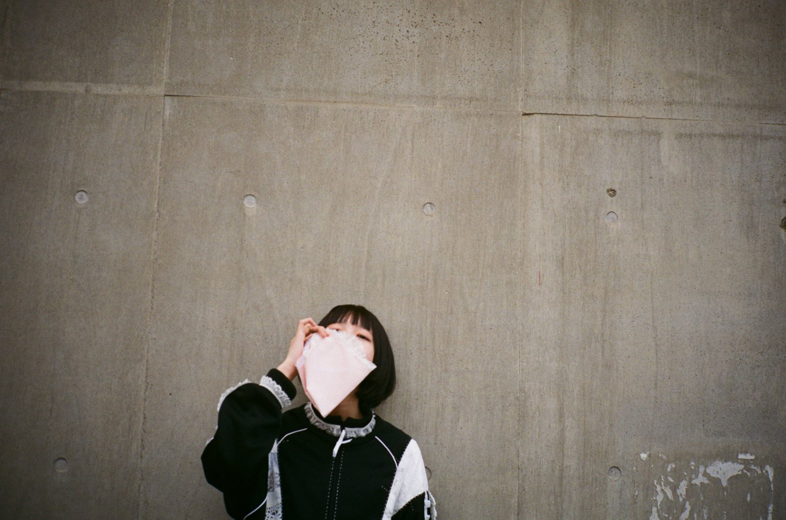

ただ、ひたすらに。。。
価値の無い日常の垂れ流し
ビーチッコ
本気の掃除は50日間かかる。
by ショーンＹ（元ドットコム(.com)和尚）
あのちゃん

過去へのリンク
もろもろのログ
すぅぅのオタ活ポスト（Ｘ）
すぅぅの映画日記はここ
堕落blog日記（水槽情報）はここ
日々ノ駄文
-----2026/05/30
晴れ。
途中のPAで2時間ほど仮眠。
朝、青森に到着。
フェリーで青森から北海道へ。
座敷で1時間ほど爆睡。
昼過ぎに実家に帰省。
買い物。
実家の高圧洗浄機を借りて
クルマのフロント部分に無数に張り付いた虫の死骸を洗い流していたら
すこし奥まったところに鳥の死骸が挟まっていた。
ちょっとショック。
夜、近所の温泉銭湯で寛ぐ。
早寝。
おわり。
-----2026/05/29
夏。
終日在宅。
夕刻、クルマで北上開始。
只管運転。
22時から福澤みすみのYouTube配信。
おわり。
-----2026/05/28
晴れ、くもり、小雨。
終日在宅。
夕方、経済活動終了後にクルマで渋谷に移動。
わんふぁす！の特典会に参加。
20分間でチェキを撮って徳を積む。
おわり。
-----2026/05/27
くもり。
午前在宅。
午後私用。
対バンライブに出演した“はなかな（綿矢花火・鳴宮かなた）”のライブ。
特典会で徳を積む。
ライブ終わりにヲタクと飲み。
なんだかんだで終電で帰宅。
おわり。
-----2026/05/26
晴れ。
終日在宅。
わんふぁす！の特典会だけ参加。
おわり。
-----2026/05/25
晴れ。
朝、電車で成田空港に移動
空路で札幌へ。
初めて格安航空会社の空路を利用。
札幌の病院でお見舞い。
面談時間は30分間。
弁当やおにぎり、あんみつ、ブリンなどを差し入れ。
その後、千歳空港に戻り麺ラー。
空路で羽田へ戻る。
ほぼ終電で帰宅。
おわり。
-----2026/05/24
くもり、霧雨。
午前、クルマで相模湖に移動。
相模湖公園近くのファミマでヲタクと待ち合わせ。
なんと！
ファミマから出てきた福澤みすみさん（推しメン）に遭遇！
その後、ヲタクと合流して会場のさがみ湖MORI MORIへ。
アイドルの野外フェス2日目。
ライブ、特典会、縁日を楽しむ。
今日も多くの徳を積んだ。
帰り、事故渋滞。
途中のPAで仮眠してから食堂で生姜焼き定食。まいう。
おわり。
-----2026/05/23
くもり、小雨。
午前、クルマでさがみ湖に移動。
予約していた駐車場にクルマを停めて
アイドル野外フェスを楽しむ。
途中、クルマに戻ってオニギリを食べたら
無性に眠くなって寝落ち。
夢の中で見たかったまねきケチャの曲が流れてた。
目を覚ましたら、すでにまねきケチャのライブは終わってた。
帰り、PAで八王子麺ラーを食す。
おわり。
-----2026/05/22
晴れ。
午前在宅。
午後会社。
歯科通院して虫歯の治療。
おわり。
-----2026/05/21
雨。
終日在宅。
夕刻、給油。
映画「テレビの中に入りたい」みる。
いかにもスタジオA24の作品っていう作品。
ちょっとした悪夢。
おわり。
-----2026/05/20
晴れ。
休み。
午後、電車で恵比寿に移動。
Chalca バンドセット1.5周年ライブを楽しむ。
前物販でTシャツとキャップを購入。
ひゃー、最高のステージ！
新衣装、ツアー発表などサプライズもあり。
関係者席に高梨螢さんを見かけた。
おわり。
-----2026/05/19
快晴。
午前在宅。
午後外出。
夜、クルマで渋谷に移動。
Chalcaのライブ。
ヲタクに薦められていた“Mirror,Mirror.”のライブを初見。
おわり。
-----2026/05/18
快晴。
午前在宅。
午後会社。
おわり。
-----2026/05/17
快晴。
夕方、クルマで白金高輪に移動。
わんふぁす！を諦めて
Chalcaのライブを選択。
おわり。
-----2026/05/16
快晴。
午後、クルマで横浜に移動。
1000 CLUBでわんふぁす！のライブ。
おわり。
-----2026/05/15
くもり、晴れ。
休日。
夕方、散髪。
おわり。
-----2026/05/14
くもり、雨。
終日会社。
夜、渋谷に移動。
わんふぁす！のライブ。
おわり。
-----2026/05/13
雨。
終日外出。
夜、秋葉原でコレット歌合戦。
おわり。
-----2026/05/12
晴れ。
午前在宅。
午後会社。
歯科通院。
夜、新宿に移動。
わんふぁす！の特典会だけ。
おわり。
-----2026/05/11
快晴。
終日在宅。
夕刻、クルマで渋谷に移動。
わんふぁす！の特典会だけ。
おわり。
-----2026/05/10
晴れ。
午後、中野に移動。
わんふぁす！のライブ。
おわり。
-----2026/05/09
晴れ。
MINIのキラキラクリスタルなキーカバーが届く。
意外と満足度高い。
洗濯。ベランダ干し。
風が強いので窓開けて掃除。
午後、クルマで白金高輪へ。
わんふぁす！、まねきケチャのライブ。
ヲタクとサイゼリアで食事。安ーい。
おわり。
-----2026/05/08
くもり。
終日在宅。
通院。
クルマのバンパーの傷の補修作業。
おわり。
-----2026/05/07
晴れ。
終日在宅。
配信など。
Chalca1周年バンドセットライブの動画USBを発注。
おわり。
-----2026/05/06
くもり。
GW連休最終日。
午後、クルマで五反田に移動。
わんふぁす！、まねきケチャのライブ。
ライブの合間にクルマに戻って
バンパーの傷の補修作業。
おわり。
-----2026/05/05
晴れ。
昼、クルマで五反田に移動。
わんふぁす！のライブ。
夕刻、羽田空港から自宅宛に宅配便で送ったスーツケースを受け取る。
洗濯。
おわり。
-----2026/05/04
くもり。
早起き。
第2便で空路で帰京。
羽田空港からスーツケースを自宅宛に宅配便で送る。
アイドルに渡すお土産をカバンに詰めて
羽田から渋谷に移動。
わんふぁす！、はなかな（鳴宮かなた・綿矢花火）の2マンライブ。
渋谷から自宅に移動。
3日ぶりの帰宅。
熱帯魚に餌、植物に水やりなど。
おわり。
-----2026/05/03
晴れ。
昼、うな重を食す。
土産など買い物。
バスに乗る。
おわり。
-----2026/05/02
雨、晴れ。
昼、ショッピングセンターなど物色。
夕方、温泉銭湯で寛ぐ。
おわり。
-----2026/05/01
晴れ。
なんか暑い。
午前、空路で実家に帰郷。
おわり。
-----2026/04/30
くもり。
休日にする。
夕刻、電車で高円寺に移動。
甲斐莉乃の生誕ライブ。
その後、渋谷に移動。
わんふぁす！の特典会だけ参加。
おわり。
-----2026/04/29
雨。
昼、クルマで渋谷に移動。
Chalcaのライブ。
カバンの補修作業。
おわり。
-----2026/04/28
晴れ。
終日在宅。
夜、クルマで高輪ゲートウェイ駅に移動。
KEN ISHIIのDJを楽しみたかったが
行列が出来ていたので断念。
まのちゃん（甲斐莉乃）による
昨年の生誕ライブを振り返る配信が始まったので
クルマで聴きながらドライブ。
おわり。
-----2026/04/27
雨、夕方に雨が上がる。
夕刻、電車で渋谷へ。
CiON佳子さんの生誕祭を楽しむ。
佳子さんの天然ぶりが爆発した生誕ライブで楽しすぎた。
2年ぶり？のCiONはパフォーマンスの安定感がマシマシで
アイドルというよりアーティストって感じだった。
帰りに駅構内で仕事の知人にばったり会う。
早速、アポを取る。
おわり。
-----2026/04/26
晴れ、くもり。
昼、電車で神田明神へ移動。
わんふぁす！のライブ。
特典会で徳を積む。
一旦帰宅。
夕刻、クルマで五反田へ移動。
Chalcaのライブと特典会を楽しむ。
おわり。
-----2026/04/25
晴れ。
風が心地よい。
電車で西新宿へ移動。
わんふぁす！のライブと特典会。
徳を積む。
その後、バスで西新宿から渋谷に移動。
Chalcaの不定期単独公演。
工藤みか作詞の新曲「Real me」が最高すぎた。
おわり。
-----2026/04/24
雨。
終日在宅。
わんふぁす！のライブに行けず。
おわり。
-----2026/04/23
晴れ。
午前在宅。
午後外出。
夕刻、会食。
会食後、湘南新宿ラインで横浜から池袋に移動。
疲れが抜けずダルいので
ネットで見つけた格安な揉みほぐし屋で60分コース。
途中で眠ってしまった。
わんふぁす！の特典会だけ楽しむ。
おわり。
-----2026/04/22
晴れ。
終日在宅。
夜、クルマで渋谷に移動。
わんふぁす！のライブと特典会。
おわり。
-----2026/04/21
晴れ。
午前在宅。
午後会社。
おわり。
-----2026/04/20
くもり。
休日。
夕刻、電車で秋葉原に移動。
ロマコン105を楽しむ。
おわり。
-----2026/04/19
晴れ。
金沢遠征2日目。
朝、ホテルの大浴場で朝風呂。
貸切状態で爽快である。
ホテルの食堂で朝食。
午前、21世紀美術館。
桜が綺麗に咲いていた。
昼、スパイスカレー。
午後、わんふぁす！のライブと特典会。
夕食は回転すし「もりもり鮨」で鱈腹。
その後、18時に金沢を出発して
夜中の23時に東京に到着。
おわり。
-----2026/04/18
晴れ。
金沢遠征1日目。
昨晩からクルマで金沢に移動して
朝8時に金沢に到着。
昼、回転すし「すし食いねぇ」。鱈腹。
わんふぁす！のライブ・特典会を2回し。
夜、クルマでホテルに移動。
チェックイン後、ホテルの温泉大浴場で寛ぎ。
おわり。
-----2026/04/17
晴れ。
午前外出。
午後在宅。
仮眠したかったが全く眠れず。
絶望。
25時すぎにクルマで出発。
途中のPAで休憩・仮眠しながら金沢まで運転。
おわり。
-----2026/04/16
晴れ。
終日在宅。
おわり。
-----2026/04/15
晴れ。
午前会社。
午後在宅。
おわり。
-----2026/04/14
雨。
午前在宅。
午後外出。
おわり。
-----2026/04/13
晴れ。
休み。
夜、暇なのドライブ。
おわり。
-----2026/04/12
晴れ。
夕方、電車で渋谷に移動。
わんふぁす！のライブと特典会。
おわり。
-----2026/04/11
晴れ。
朝、電車で五反田に移動。
わんふぁす！のライブ。
昼、五反田のタイ料理店でグリーンカレー。まいう。
夜、福澤みすみのYouTubeライブ。
おわり。
-----2026/04/10
晴れ。
午前、在宅。
午後、外出。
展示会で話したり聞いたり。
おわり。
-----2026/04/09
晴れ。
午前、在宅。
午後、外出。
展示会で聞いたり話したり。
おわり。
-----2026/04/08
雨。
終日在宅。
おわり。
-----2026/04/07
くもり。
終日在宅。
夕方、電車で渋谷に移動。
わんふぁす！の特典会だけ参加。
その後、別のライブハウスに移動。
日下部美愛お披露目のTohkeiライブを楽しむ。
美愛さんとチェキを撮る。
おわり。
-----2026/04/06
雨。
終日在宅。
夕方、電車で恵比寿に移動。
はなかな（鳴宮かなた・綿矢花火）、
わんふぁす！、トウトイナ。
のライブを楽しむ。
おわり。
-----2026/04/05
晴れ。
朝、電車で恵比寿に移動。
わんふぁす！のライブと特典会。
電車で三鷹に移動。
甲斐莉乃のアコギライブ。
ヒーコー飲みながらゆったり。
おわり。
-----2026/04/04
くもり、雨。
午前、クルマで渋谷に移動。
小日向麻衣10周年ライブ「まいちゃんといっしょ3」を楽しむ。
おわり。
-----2026/04/03
晴れ。
終日在宅。
おわり。
-----2026/04/02
晴れ。
終日在宅。
暇なのでクルマに乗る。
おわり。
-----2026/04/01
晴れ。
午前在宅。
午後会社。
夕刻、電車で渋谷に移動。
わんふぁす！のソロライブを楽しむ。
おわり。
-----2026/03/31
風雨。
桜の花が散ってしまう。
終日在宅。
クルマ（F66 MINI）のOSをバージョンアップ。
スマホのMINI専用アプリにダウンロードしたファイルを
車内でクルマに転送してバージョンアップを開始。
約20分後にOSが新しくなった。
radikoのタイムフリーで
アトロク2「西寺豪太 洋楽スーパースター列伝 ダイアナ・ロス」（TBSラジオ）
「空気階段の踊り場」（TBSラジオ）
を聴く。
おわり。
-----2026/03/30
くもり。
終日在宅。
夕刻、床屋で散髪。
昨年末以来の3ヶ月ぶり。
おわり。
-----2026/03/29
晴れ。
午後、電車で浅草へ移動。
根本凪のアイドル卒業ライブ「スピカ・ピアチェーレ！」
虹コン、でんぱ組、ソロと続いた約12年間のアイドル活動を卒業。
涙。。。
おわり。
-----2026/03/28
花見日和。
ネット映画「愛はステロイド」（APV）
地域を支配する狡猾な犯罪者を父に持つ主人公ルーと
放浪のボディビルダージャッキーの同性カップルを描く。
終盤の演出が笑える。
ネット映画「トラップ」（APV）
地雷を踏んでしまって身動きがとれない兵士の苦闘と葛藤を描く。
ネット映画「メーデー 彼女たちの戦争」（APV）
ミア・ゴス目当てで鑑賞。
結婚式場で働くウェイトレスの白昼夢。
ネット映画「逆転のトライアングル」（APV）
社会の縮図、下品な演出で笑える。
財力や知力で上下関係を構築する人間社会の風刺。
おわり。
-----2026/03/27
雨。
終日在宅。
ネット映画「プリティリーサル」（APV）
遠征先で道に迷った挙げ句に
不穏なホテルに拉致されたバレリーナー5人組の躍動を描く。
二重の意味で復讐劇。
アクションシーンがコントみたいで最高。
ネット映画「スティーブン・キング ビッグ・ドライバー」（APV）
推理作家が凶悪なレイプ犯に復讐する話。
そこそこ面白かった。
おわり。
-----2026/03/26
雨。
終日在宅。
夕刻、電車で新宿に移動。
わんふぁす！のライブと特典会。
ネット映画「エディントンへようこそ」（APV）
コロナ禍のアメリカの田舎町で起きた惨劇を描く。
主人公の保安官ジョーを演じたホアキン・フェニックスの演技が見事。
まともに見えた登場人物たちの狂気が渦巻く。
後半の怒涛の展開に衝撃を受ける。
おわり。
-----2026/03/25
晴れ。
午前在宅。
午後会社。
夕方在宅。
ネット映画「マーシー AI裁判」（APV）
主演のクリス・プラットが被告席に固定されて
座ったまま物語が進行する異例な演出。
面白さはぼちぼち。
おわり。
-----2026/03/24
晴れ。
午前在宅。
午後外出。
夕方在宅。
おわり。
-----2026/03/23
晴れ。
終日在宅。
夕刻、クルマで渋谷に移動。
みちゅみ（福澤みすみ）の日なので
わんふぁす！の特典会だけでも参加。
22時から福澤みすみのオンライン特典会。
おわり。
-----2026/03/22
晴れ。
記憶なし。
おわり。
-----2026/03/21
晴れ。
午後、電車で新宿に移動。
アイドルライブのサーキットイベント
わんふぁす！のライブと特典会。
ヲタクと日高屋で食事。
まねきケチャのライブと特典会。
ヲタクと飲み会。
深夜帰宅。疲れた。。。
おわり。
-----2026/03/20
雨、くもり。
午前、電車で渋谷に移動。
高梨螢と工藤みかによるぽたみかの“此処から”Vol.4
2人の歌に酔いしれた。
特典会を途中で抜けて恵比寿に移動。
鳴宮かなたと綿矢花火による“はなかな”の
綿矢花火高校卒業おめでとう公演
ライブ後にヲタクと飲み会。
おわり。
-----2026/03/19
晴れ。
終日在宅。
テレビ映画「エンド・オブ・キングダム」（録画）
ジェラルド・バトラー主演の大統領を守るシリーズ
おわり。
-----2026/03/18
晴れ。
午前在宅。
午後外出。
夕刻、業界団体の慰労会。
美味しい料理を鱈腹。
おわり。
-----2026/03/17
晴れ。
終日在宅。
ネット映画「梟 -フクロウ-」（APV）
挑戦時代劇。
盲目の青年医師が“見て見ぬ振り”を出来なかった物語。
面白い。
おわり。
-----2026/03/16
晴れ。
終日在宅。
ネット映画「ジェラシック・ワールド／復活の大地」（APV）
恐竜のDNA？を採取する秘密ミッションを遂行する探検チームと遭難した父娘の苦難を描く。
スカーレット・ヨハンソンが大活躍。
おわり。
-----2026/03/15
晴れ。
午前、クルマで東京ドイツ村（千葉県袖ヶ浦）に移動。
わんふぁす！のライブを2回し。
空き時間に読書が捗った。
ヲタク一人を最寄りの袖ケ浦駅まで送ってから帰宅。
帰りのSAでアジフライ定食。まいう。
おわり。
-----2026/03/14
晴れ。
ネット映画「聖なる鹿殺し」（APV）
ヨルゴス・ランティモス監督の作品。
飲酒後に執刀して患者を死なせた心臓外科医が悪魔的な呪いを受ける話。
恐ろしい映画だと思う。
考察と深読みをしたくなる。。。
おわり。
-----2026/03/13
晴れ。
終日在宅。
通院。
血圧の薬の処方と採血。
おわり。
-----2026/03/12
晴れ。
終日在宅。
夕刻、電車で新宿に移動。
高校の仲間と北海道居酒屋で飲み会。
途中で30分抜けて近くのライブハウスでわんふぁす！のライブ。
北海道居酒屋に戻って飲み会に続き
その後、飲み会を抜けてわんふぁす！の特典会に参加。
おわり。
-----2026/03/11
晴れ。
午前在宅。
午後外出。
ネット映画「ロブスター」（APV）
呪いに縛られた世界を描いているが、
これは現実社会も似たようなものかも。
素晴らしい作品だと思う。
ヨルゴス・ランティモス監督の作品は順次鑑賞したい。
おわり。
-----2026/03/10
晴れ。
終日在宅。
おわり。
-----2026/03/09
晴れ。
午前在宅。
午後会社。
おわり。
-----2026/03/08
晴れ。
昼前、電車で秋葉原に移動。
ロマコンを楽しむ。
まねきケチャ、トウトイナ。、わんふぁす！、
はなかな（鳴宮かなた・綿矢花火）のライブを楽しむ。
ライブ後にヲタクと日高屋で食事。
おわり。
-----2026/03/07
晴れ。
昼前、電車で新宿に移動。
高梨螢お目当てで三好麗奈のイベントを楽しむ。
渋谷に移動。
Chalcaの月永凛音生誕祭を楽しむ。
おわり。
-----2026/03/06
晴れ。
午前在宅。
午後会社。
眼科で花粉症の目薬を処方してもらう。
夕刻、電車で池袋に移動。
高梨螢が出演した朗読劇を観劇。
渋谷に移動。
わんふぁす！の特典会を楽しむ。
おわり。
-----2026/03/05
晴れ。
終日在宅。
おわり。
-----2026/03/04
晴れ。
終日在宅。
おわり。
-----2026/03/03
雨。
終日在宅。
夕刻、雨の中をすこしクルマを走らせてから
駐車場に戻って拭き掃除。
ネット映画「バンビルビー」（APV）みる。
よかった！
画面も楽しい。
物語もシンプルで楽しい。
80年代のUKロックの挿入歌が嬉しい。
とりわけザ・スミスが嬉しい。
主人公チャーリーの成長が魅力的。
家族の絆を描いていて感動。
おわり。
-----2026/03/02
くもり。
早朝起床。
早めに経済活動に着手。
終日在宅。
夕刻、クルマで渋谷に移動。
わんふぁす！のライブを楽しむ。
おわり。
-----2026/03/01
雨。
午後、電車で新宿に移動。
対バンライブに参加した
“鳴宮かなたと綿矢花火”のライブを楽しむ。
テンション上がって特典会で散財する。
おわり。
-----2026/02/28
晴れ。
やはり、花粉は酷い。
昼前にピンクのバッグが届く。
ネット映画「見えない目撃者」（APV）みる。
吉岡里帆主演のサスペンス・スリラー。
盲目の元警察官の若い女がサイコキラーを追い詰める。
警察が無能、世の中が狭い設定などお約束通りの演出。
面白かった。
昼寝。
夜、電車で大塚に移動。
一週間ぶりにわんふぁす！のライブ。
新しいライブハウスだった。
おわり。
-----2026/02/27
くもり、雨。
終日在宅。
暇なので、肉じゃがを調理。
ネット映画「おんどりの鳴く前に」（APV）みる。
村長夫妻が支配する不穏な村に勤める警察官がやがて正義に目覚める。
ラストの銃撃戦が素晴らしかった。
ビートたけしの映画みたい。
深夜、Geminiと映画の解釈について意見交換。
女の主人公が苦難を経て変貌、変様する物語に惹かれている。
シビル・ウォー、エイリアン・ロムルス、ボーダーラインなど。
おわり。
-----2026/02/26
晴れ。
終日在宅。
夕刻、クルマで渋谷に移動。
Chalcaのライブを楽しむ。
不定期公演 MIXED UP #08
またも新曲披露！
おわり。
-----2026/02/25
晴れ。
終日在宅。
ネット映画「不能犯」（APV）みる。
松坂桃李主演のファンタジー・スリラー。
殺意を餌にして人間を操って殺人を繰り返す悪魔と
その悪魔を追い詰める女刑事（天使？）を描く。
沢尻エリカ様が出演。
おわり。
-----2026/02/24
雨。
午前在宅。
午後外出。
夕方在宅。
おわり。
-----2026/02/23
晴れ。
3連休最終日。
給油。
おわり。
-----2026/02/22
晴れ。
昼、鳴宮かなたのTikTok配信。
夕方、クルマで下北沢に移動。
工藤みかソロライブを楽しむ。
リクエストしたアイナの“革命道中”をやってくれた！
コインパーキングに停めたクルマの中で
小日向麻衣のオンライン特典会を眺める。
おわり。
-----2026/02/21
晴れ。
三連休初日。
昼、電車で恵比寿に移動。
わんふぁす！のライブ。
一昨日から出来事についてヲタクと話す。
帰り、日高屋で炒飯と餃子。
帰宅後、一瞬夕寝。
25時すぎから鳴宮かなたのTikTok配信。
眠れず。
無駄に夜更かし。
おわり。
-----2026/02/20
晴れ。
午前会社。
午後在宅。
夕方、早めに経済活動を切り上げて
電車で渋谷に移動。
わんふぁす！のライブ。
情報収集、情報交換、情報発信。
夕食は天ぷら定食。
おわり。
-----2026/02/19
晴れ。
終日在宅。
夕刻、クルマで秋葉原に移動。
わんふぁす！のライブ。
ちょっとした修羅場。
おわり。
-----2026/02/18
晴れ。
午前外出。
午後在宅。
おわり。
-----2026/02/17
雨、冷える。
終日在宅。
夕刻、電車で渋谷に移動。
日高里緒さん主催の“みんなでひきがたりお2”を楽しむ。
ライブハウスが満員。
松下玲緒菜さんのライブが印象的。
あのちゃんの武道館Blu-rayが届く。
おわり。
-----2026/02/16
晴れ、雨。
午前在宅。
午後外出。
夕刻、電車で秋葉原へ移動。
わんふぁす！と“はなかな”（鳴宮かなたと綿矢花火）のライブ。
帰りの電車でヲタクといろいろと話す。
おわり。
-----2026/02/15
晴れ。
早朝、一泊した遠征ヲタクが渋滞が渋滞を避ける為に早々に出発。
夕刻、クルマで新宿に移動。
わんふぁす！のライブ（トリ）を楽しむ。
おわり。
-----2026/02/14
晴れ。
午前、電車で新宿に移動。
降りる駅を間違えてすこし歩く。
対バンに参加した甲斐莉乃さんのライブを楽しむ。
特典会はまのちゃん本人がワンオペ。
ソロ・チェキはヲタクがまのちゃんを撮影するスタイルなので、
初めてチェキを撮ってみた。
感動。面白い！
まのちゃんからチョコいただく。
その後、上野に移動。
野外音楽堂でわんふぁす！のライブを楽しむ。
特典会中にヲタク2名と合流して遠征ヲタクのクルマで帰宅。
食材など買い物。
自宅にて遠征ヲタクの手料理を楽しむ会。
鱈腹。
料理を作った遠征ヲタクが自宅に一泊。
慌ただしい一日だった。
おわり。
-----2026/02/13
晴れ。
終日在宅。
はやり掃除。
おわり。
-----2026/02/12
晴れ。
終日在宅。
とにかく掃除。
おわり。
-----2026/02/11
晴れ。
昼、電車で浅草に移動。
わんふぁす！のライブを楽しむ。
一旦帰宅して食事など。
夕刻、クルマで渋谷に移動。
今年6月に解散してしまう“フィロソフィーのダンス”と
再結成して活動してる“太陽とシスコムーン”の２マンライブ。
誘ってくれたヲタクを送ってから帰宅。
おわり。
-----2026/02/10
晴れ。
終日在宅。
昼、鳴宮かなたのTikTok配信。
クリストファー・ノーラン監督の初期の作品
「フォロウィング」（APV）みる。
おわり。
-----2026/02/09
晴れ。
終日在宅。
早めに経済活動を切り上げて
電車で渋谷に移動
昨日、花屋で花束を受け取ってからライブハウスへ。
福澤みすみのソロイベント「みすみまみれフルコース」を楽しむ。
ラジオの公開収録、歌、クッキングなど盛りだくさんの100分間。
限定メニューも堪能した。
お疲れ様でした！
おわり。
-----2026/02/08
雪、くもり。
雪が積もる。
寒い寒い。
昼、電車で新宿に移動。
雪の影響なのか？
電車がめちゃくちゃ遅れた。
わんふぁす！のライブには間に合わず。
特典会だけ参加して徳を積む。
渋谷に移動。
花屋で花束の相談。
投票行動。
風呂で温まる。
おわり。
-----2026/02/07
晴れ。
冷える。
昼、電車で渋谷に移動。
わんふぁす！とはなかな（綿矢花火・鳴宮かなた）のライブを楽しむ。
かなたさんと話せてよかった。
その後、恵比寿に移動。
腹が減ったので天丼を食す。
ChalcaのYUINA生誕祭を楽しむ。
マジで楽しかった。
特典会で工藤みかさんとそこそこ話せて幸せ。
生誕Tシャツを買って帰る。
鳴宮かなたさんのTikTokライブを楽しみながら帰宅。
夜、遅い時間から福澤みすみのYouTubeライブ。
一気にチャンネル登録者数が増えた。
おわり。
-----2026/02/06
晴れ。
終日在宅。
夕方、クルマで有明へ移動。
余裕があったので下道を走ってみた。
マイ・ブラッディ・ヴァレンタインのライブを楽しむ。
シューゲイザーの元祖的なバンド。
2時間弱のライブ、徐々に音が大きくなった気がする。
ラストの10分間、異常な轟音の渦に包まれて
浮遊感と多幸感に包まれた。
鳴宮かなたさんのTikTokライブを聴きながら
高速道路を使ってとっとと帰宅。
興奮して眠れないので
ネット映画「ミッション・ワイルド」（APV）をみる。
トミー・リー・ジョーンズの監督・脚本・出演の異色西部劇。
終盤の展開に唖然とした。
絶望の縁を垣間見た気がした。
おわり。
-----2026/02/05
晴れ。
終日在宅。
夕刻、クルマで恵比寿に移動。
わんふぁす！のライブを楽しむ。
おわり。
-----2026/02/04
晴れ。
終日在宅。
Chalcaのバンドセット対バンのチケットを確保していたが
いろいろあってライブに行くのを諦めた。
おわり。
-----2026/02/03
晴れ。
午前在宅。
午後会社。
午後、歯科通院。
歯のクリーニング。
虫歯の赤ちゃんを指摘される。
ちゃんと磨こう。
ライブに行かない日。
おわり。
-----2026/02/02
晴れ。
冷える。
午前在宅。
午後年休。
昼、電車で渋谷に移動。
コレットシャッフル歌合戦を楽しむ。
推しメン2人（鳴宮かなた・福田みすみ）が
修二と彰の「青春アミーゴ」を披露。
ちゃんと成り切っていて面白い。
ヒーコー飲みながらチェキツイ。
夕刻からツインテールコンポート2026を楽しむ。
はなかな（綿矢花火・鳴宮かなた）のステージが一番よかった！
おわり。
-----2026/02/01
晴れ。
ネット映画「コップ・カー」（APV）みる。
少年2人が悪徳警官？が森に隠したパトカーを乗っ取る話。
以前に見たはず。面白い。
昼、電車で東銀座に移動。
わんふぁす！のライブを楽しむ。
マネージャーさんの誕生日。
ちょっとしたプレゼントを渡す。
ライブ会場近くの熱帯魚屋で
水槽内に出現する小さな貝を食べる巻き貝を購入。
夜、福澤みすみのYouTubeライブ。
おわり。
-----2026/01/31
晴れ。
午後、電車で渋谷に移動。
わんふぁす！のライブを楽しむ。
一旦帰宅。
夕刻、クルマで白金高輪に移動。
わんふぁす！のライブ。
本日2回し。
おわり。
-----2026/01/30
くもり、雨。
終日在宅。
ネット映画「レッキング・クルー」（APV）みる。
とんだバカ映画だった。
アクションだけが見どころのスカスカの映画。
おわり。
-----2026/02/29
晴れ。
終日在宅。
ライブに行けなかった。
おわり。
-----2026/01/28
くもり。
終日在宅。
夕刻、クルマで渋谷に移動。
Chalcaの緊急招集ライブを楽しむ。
新曲披露、重要ライブ予定などの発表あり。
おわり。
-----2026/01/27
晴れ。
終日在宅。
夕刻、クルマで高円寺に移動。
甲斐莉乃さん主催の対バンライブ。
まのちゃんのソロ、バンドANY‰で盛り上がる。
前回は七夕ライブだったはず。
半年ぶりだったので特典会でループ。
おわり。
-----2026/01/26
くもり、晴れ。
終日在宅。
深夜、ネット映画「コヴェナント 約束の救出」（APV）みる。
タリバンが支配するアフガニスタンから命の恩人を救出する話。
ウォーフェアの観た後ではリアリティーに欠けると思えた。
おわり。
-----2026/01/25
晴れ。
ネット映画「MEN」（APV）みる。
昨日映画館で衝撃を受けた「ウォーフェア」を監督した
アレックス・ガーランド監督作品だったのでチェックした。
これが、悪夢みたいな怪奇映像で戦慄した。
トラウマになる。
夕刻、クルマで横浜みなとみらいに移動。
わんふぁす！のライブを楽しむ。
おわり。
-----2026/01/24
晴れ。
夕刻、ドルビーアトモスの音響設備がある映画館までクルマで移動。
映画「ウォーフェア」（映画館）みる。
イラク戦争時に戦闘が激化する市街地に投入された米軍特殊部隊の数時間を描く。
BGMなしの音響が凄まじい
やばい戦争映画を観てしまった。
おわり。
-----2026/01/23
晴れ。
冷える。
午前外出。
午後在宅。
ネット映画「トランス・フューチャー」（APV）みる。
奇天烈な物語。
ある意味で一人芝居。
姉弟愛の話だったのか？
その意味でドンデン返し。
おわり。
-----2026/01/22
晴れ。
乾燥。
午前在宅。
午後外出。
おわり。
-----2026/01/21
晴れ。
乾燥。
冷える。
午前在宅。
午後外出。
夕刻会社。
おわり。
-----2026/01/20
晴れ、くもり。
冷える。
終日在宅。
おわり。
-----2026/01/19
晴れ。
終日在宅。
少し早めに切り上げて秋葉原に電車移動。
ロマコン103を楽しむ。
鳴宮かなた・綿矢花火のステージが素晴らしかった。
まだまだ荒削りであるが、
2人の歌声に魂が揺さぶられた。
来月のツインテールコンポートでのステージも楽しみ。
例のごとく特典会で散財。
おわり。
-----2026/01/18
晴れ。
午後、電車で恵比寿に移動。
鳴宮かなた・綿矢花火の晴れ着チェキ会。
二人に新年の挨拶が出来た。
おわり。
-----2026/01/17
晴れ。
朝、電車で渋谷に移動。
わんふぁす！のライブを楽しむ。
午後、帰宅。
先日ネット発注した帽子とロンTが届く。
おわり。
-----2026/01/16
晴れ。
終日在宅。
録画消化、ネット映画など。
すぅぅの映画日記
おわり。
-----2026/01/15
晴れ。
花粉なのか？黄砂なのか？
目と鼻と喉が不調。。。
終日在宅。
おわり。
-----2026/01/14
晴れ。
午前在宅。
午後外出。
暇なので、すこし歩いてみた。
おわり。
-----2026/01/13
晴れ。
終日在宅。
夕刻、通院して切れていた薬を入手。
おわり。
-----2026/01/12
晴れ。
祝日、成人の日。
昼、歩くために電車で白金高輪に移動。
わんふぁす！のライブを楽しむ。
おわり。
-----2026/01/11
晴れ。
夕方、電車で渋谷に移動。
Chalca望月愛実さんの生誕祭。
楽しかった！
帰りの電車で
福澤みすみさんのYouTube配信を楽しむ。
おわり。
-----2026/01/10
晴れ。
昼、クルマで新宿に移動。
事故渋滞に掴まって到着が遅れた。。。
わんふぁす！のライブが見れなかった。
特典会は楽しむ。
その後、渋谷に移動。
格安コインパーキングに停める。
蕎麦屋で山菜蕎麦を食す。まいう。
Chalcaのライブを楽しむ。
おわり。
-----2026/01/09
晴れ。
終日在宅。
おわり。
-----2026/01/08
晴れ。
終日在宅。
夕刻、クルマで渋谷に移動。
Chalcaのライブを楽しむ。
年始のご挨拶。
おわり。
-----2026/01/07
晴れ。
終日在宅。
19時から福澤みすみの声まみれ。
21時から鳴宮かなた・綿矢花火のオンライン年賀状特典会。
おわり。
-----2026/01/06
晴れ。
終日在宅。
経済活動を早めに切り上げて
クルマで渋谷に移動。
まねきケチャ、わんふぁす！のライブを楽しむ。
おわり。
-----2026/01/05
晴れ。
仕事始め。
終日在宅。
おわり。
-----2026/01/04
晴れ。
朝、クルマで渋谷に移動。
トッパーで登場したわんふぁす！のライブ。
特典会の途中、某ヲタクからお勧めされた
べるべっとセンテンスのライブを見てみる。
おわり。
-----2026/01/03
晴れ。
夕刻、空路で帰京。
飛行機の中で爆睡したので
なかなか寝付けない。
おわり。
-----2026/01/02
晴れ。
朝、雪かき。
暇なので近所のショッピングモールを物色。
実家の風呂で寛ぐ。
ネット映画「エイリアン ロムルス」（APV）みる。
劇場で鑑賞したがアマプラに来ていたので改めて鑑賞。
おわり。
-----2026/01/01
雪。
早朝起床。
雪かきで腰にダメージ。
吹雪の中、約20分間歩いて
温泉銭湯に向かう。
銭湯の湯船、露天風呂、サウナで寛ぎ。
爺が大きな声で独り言をずーっと話していて気になった。
最初、落語の練習かと思ったが違った。
おわり。
去年（2025年）の日記